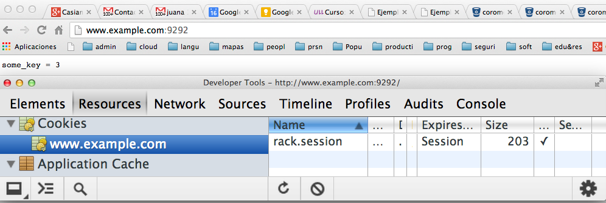

Sig: Ejemplo Simple Combinando Rack::Request, Sup: Rack, un Webserver Ruby Ant: Cookies y Rack Con:
Rack::Session::Cookie proporciona un sencillo sistema para gestionar sesiones basado en cookies.
rack.session pero puede ser
modificado mediante el atributo :key.
secret_key se garantiza que es comprobada
la integridad de los datos de la cookie
env["rack.session"] o bien
env["key-value"] si hemos especificado el atributo
:key
Sigue un ejemplo:
[~/local/src/ruby/sinatra/rack/rack-session-cookie(master)]$ cat configapp.ru
require 'pp'
require './myapp'
use Rack::Session::Cookie,
:key => 'rack.session',
:domain => 'example.com',
:secret => 'some_secret'
run MyApp.new
[~/local/src/ruby/sinatra/rack/rack-session-cookie(master)]$ cat myapp.rb
class MyApp
def set_env(env)
@env = env
@session = env['rack.session']
end
def some_key
return @session['some_key'].to_i if @session['some_key']
@session['some_key'] = 0
end
def some_key=(value)
@session['some_key'] = value
end
def call(env)
set_env(env)
res = Rack::Response.new
req = Rack::Request.new env
self.some_key = self.some_key + 1 if req.path == '/'
res.write("some_key = #{@session['some_key']}\n")
res.finish
end
end
Hagamos la prueba conectándonos a www.example.com. Para ello
edtiamos /etc/hosts para que localhost apunte a
www.example.com:
[~/local/src/ruby/sinatra/rack/rack-session-cookie(master)]$ cat /etc/hosts ## # Host Database # # localhost is used to configure the loopback interface # when the system is booting. Do not change this entry. ## 127.0.0.1 localhost www.example.com ...
Arrancamos el servidor:
[~/local/src/ruby/sinatra/rack/rack-session-cookie(master)]$ rackup configapp.ru >> Thin web server (v1.5.1 codename Straight Razor) >> Maximum connections set to 1024 >> Listening on 0.0.0.0:9292, CTRL+C to stop
Y visitamos www.example.com con nuestro navegador:

Supongamos el siguiente programa rack en el que se incrementa
la variable @some_key:
[~/local/src/ruby/sinatra/rack/rack-appvswebserver(icon)]$ cat configapp.ru
class Persistence
def call(env)
res = Rack::Response.new
req = Rack::Request.new env
@some_key ||= 0
@some_key = @some_key + 1
res.write("@some_key = #{@some_key}\n")
res.finish
end
end
run Persistence.new
Supongamos que arranco el servidor:
[~/local/src/ruby/sinatra/rack/rack-appvswebserver(master)]$ rackup configapp.ru >> Thin web server (v1.5.1 codename Straight Razor) >> Maximum connections set to 1024 >> Listening on 0.0.0.0:9292, CTRL+C to stop
Nótese que con thin arrancado desde rack
se tienen los valores de env para las claves:
rack.multithread => false rack.multiprocess => falselo que indica que el servidor no está soportando multithreading ni multiproceso.
Responda a estas preguntas:
@some_key serán mostrados cuando me conecto a localhost:9292?
[~/local/src/ruby/sinatra/rack/rack-appvswebserver(icon)]$ rvm use jruby-1.7.3 Using /Users/casiano/.rvm/gems/jruby-1.7.3 [~/local/src/ruby/sinatra/rack/rack-appvswebserver(icon)]$ rackup configapp.ru Puma 2.6.0 starting... * Min threads: 0, max threads: 16 * Environment: development * Listening on tcp://0.0.0.0:9292 rack.multithread => true rack.multiprocess => false
[~/local/src/ruby/sinatra/rack/rack-appvswebserver(icon)]$ cat Rakefile
desc "run the server"
task :default do
sh <<-"EOS"
#rvm use jruby-1.7.3 &&
#ruby -v &&
rackup -s puma configapp.ru
EOS
end
desc "run the client"
task :client do
pids = []
(0...100).each do
pids << fork do
sh %q{curl -v 'http://localhost:9292' >> salida 2>> logs}
end
end
puts pids
end
desc "remove output and logs"
task :clean do
sh "rm -f salida logs"
end
De acuerdo a una respuesta en StackOverflow a la pregunta: Is Sinatra multi-threaded? I read else where that "sinatra is multi-threaded by default", what does that imply?
The choice is mainly made by the server and middleware you use:
Casiano Rodríguez León